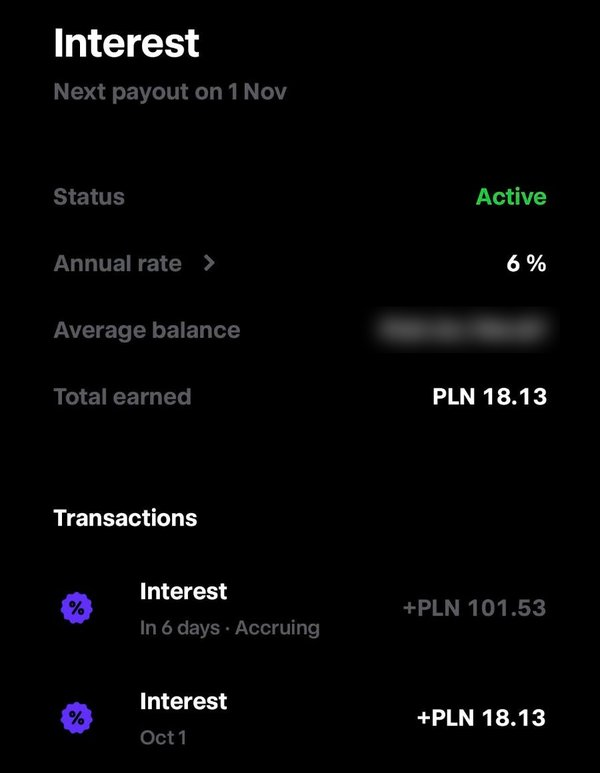

Przegląd oferty, bezpieczeństwa pieniędzy i podatków na podstawie publicznych dokumentów banku, nadzoru i niemieckiego systemu gwarancji depozytów.
Oferta ma realne podstawy. To regulowany bank, a gotówka jest chroniona do 100 tys. euro. Dobre miejsce na część poduszki bezpieczeństwa, przy czym oprocentowanie jest zmienne: 6% to stawka na dziś.
Trade Republic figuruje w wykazie KNF jako niemiecka instytucja kredytowa z oddziałem w Polsce. Dla polskiej gotówki wskazuje Deutsche Bank AG i ochronę depozytów do 100 000 euro na klienta. To konkretne zabezpieczenia, ale nie obietnica, że dostęp do pieniędzy nigdy się nie zatnie. Dlatego na bieżące wydatki warto mieć konto w polskim banku, a tutaj trzymać pieniądze, które mają być dostępne szybko, ale na co dzień leżą. [1, 2]
Stan oferty na październik 2026. Warunki mogą się zmienić, aktualne zawsze pokazuje aplikacja.
To oprocentowane saldo gotówkowe na koncie, które służy też do inwestowania. Odsetki trzeba aktywować w aplikacji. Naliczane są codziennie, wypłacane co miesiąc, a pieniądze można wypłacić w każdej chwili, bez zakładania lokaty na określony czas. Nadwyżka ponad 200 000 zł jest oprocentowana według stopy depozytowej NBP. [2]
Program dodatkowych odsetek może zostać wypowiedziany z dwutygodniowym wyprzedzeniem. Szczegóły określa aplikacja lub cennik. W dokumentach nie ma podstawy, żeby uznać 6% za gwarantowane przez pełne 12 miesięcy. Traktuj to jak dobre oprocentowanie na dziś, a nie lokatę z gwarancją. [3, s. 51-52]
Skąd tak wysoka stawka? Najpewniej to koszt pozyskania klienta, który potem korzysta z karty i inwestycji. To moja interpretacja modelu biznesowego, a nie zweryfikowane dane banku. Sama wysoka stawka nie jest ani dowodem oszustwa, ani gwarancją, że utrzyma się długo.

| Stałe saldo | Brutto za rok | Netto za rok | Netto miesięcznie |
|---|---|---|---|
| 10 000 zł | 600 zł | 486 zł | 40,50 zł |
| 50 000 zł | 3 000 zł | 2 430 zł | 202,50 zł |
| 100 000 zł | 6 000 zł | 4 860 zł | 405 zł |
| 200 000 zł | 12 000 zł | 9 720 zł | 810 zł |
Obliczenia własne: saldo × 6% × 81%. Hipotetyczny pełny rok przy niezmiennej stawce, bez kapitalizacji i zaokrągleń podatku. Średnia miesięczna nie jest prognozą konkretnego przelewu.
Trzeba rozdzielić dwie instytucje: Trade Republic obsługuje Cię jako klienta, a bank powierniczy przechowuje gotówkę. Dla Polski strona oferty wskazuje Deutsche Bank AG. [2, 3]
| Sytuacja | Zabezpieczenie i jego granice |
|---|---|
| Upadłość Trade Republic | Umowa przewiduje oddzielenie środków powierniczych od majątku banku i ochronę przed syndykiem. Odzyskanie dostępu może jednak wymagać formalności. [3, s. 50-51] |
| Upadłość Deutsche Bank AG | Niemiecki ustawowy system gwarancji depozytów (EdB) chroni do 100 000 euro na deponenta w tym banku. [4, 5] |
| Awaria aplikacji, blokada konta, kontrola AML | Gwarancja depozytu tu nie pomaga. Bank może działać i być wypłacalny, a Ty przez jakiś czas nie mieć dostępu do pieniędzy. To osobne ryzyko. |
| Spadek ceny akcji, ETF-u lub kryptowaluty | To nie jest strata gwarantowanego depozytu. Kupując inwestycje, zmieniasz charakter ryzyka. [4] |
System gwarancji sumuje wszystkie depozyty tej samej osoby w tej samej instytucji. Jeśli masz inne pieniądze bezpośrednio w Deutsche Bank AG, wchodzą do tego samego limitu. Przy kursie około 4,30 zł za euro limit to mniej więcej 430 000 zł, więc saldo 200 000 zł zostawia duży zapas. To ilustracja, a nie stały limit w złotych. [4]
EdB wypłaca w euro, po kursie Europejskiego Banku Centralnego z dnia stwierdzenia upadłości. Zasadniczy termin to siedem dni roboczych od tego stwierdzenia, a nie od pierwszej awarii aplikacji. [4, 6]
Polski numer konta (IBAN) nie oznacza ochrony polskiego Bankowego Funduszu Gwarancyjnego. Podstawą jest niemiecki system ochrony depozytów Deutsche Bank AG i nie ma tu drugiego, dodatkowego limitu 100 000 euro. [2, 5]
Status da się sprawdzić niezależnie od reklamy. KNF podaje niemiecki kraj pochodzenia, nadzór niemieckiego BaFin, polski oddział z numerem KRS 0001174214 i rozpoczęcie działalności w Polsce 11 września 2025 roku. To bank z innego kraju Unii, a nie anonimowa strona obiecująca odsetki. [1]
Obsługa działa także po polsku: na czacie i przez telefon, przy czym rozmowę rozpoczyna się w aplikacji. [15]
Pełną licencję bankową Europejskiego Banku Centralnego Trade Republic ogłosił w grudniu 2023 roku. Firma podaje ponad 10 mln klientów i ponad 150 mld euro aktywów klientów. To informacja o skali, a nie o kapitale banku: aktywa klientów to nie pieniądze, którymi bank może pokrywać własne straty. [7, 8]
Niemieckie organizacje konsumenckie i prasa opisują problemy z obsługą i z przenoszeniem rachunków inwestycyjnych. Stiftung Warentest pisała o błędnych transferach, a Tagesschau o wzroście skarg w 2025 roku. Nie wszystkie przypadki dotyczą polskiej gotówki, ale warto liczyć się z tym, że reklamacja może trwać. [9, 10]
Verbraucherzentrale Baden-Württemberg zakwestionowała reklamę oprocentowania i ochrony depozytów w niemieckiej ofercie. Chodziło o zbyt mało wyraźne informowanie o zmiennej stawce i o lokowaniu części salda w funduszach płynnościowych bez gwarancji depozytów. Sprawa zakończyła się ugodą 6 lipca 2026 roku. Nie był to wyrok o niewypłacalności. [11]
Niemieckiego modelu nie trzeba przenosić na Polskę. Polska oferta wskazuje gotówkę w Deutsche Bank AG i nie ma w niej mowy o automatycznym kierowaniu salda do funduszy rynku pieniężnego. Gdyby aplikacja pokazała fundusz albo inny sposób przechowywania, ocenę ochrony trzeba zrobić od nowa. [2, 11]
Od odsetek obowiązuje 19% podatku Belki i Trade Republic pobiera go sam, zanim odsetki trafią na Twoje konto. Tak samo jak przy lokacie w polskim banku: nie musisz ich osobno wykazywać w zeznaniu ani płacić podatku drugi raz. [2, 12, 13]
Inaczej jest z inwestycjami. Jeśli kupujesz przez Trade Republic akcje albo ETF-y, zyski ze sprzedaży i zagraniczne dywidendy to osobny temat i przed rozliczeniem rocznym warto sprawdzić dokumenty podatkowe, które bank udostępni.
Pułapka: polskojęzyczna strona pomocy Trade Republic o deklaracji podatkowej wspomina niemiecki podatek kościelny i dodatek solidarnościowy. To ślad tłumaczenia niemieckiej treści, a nie polskie obowiązki. Nie traktuj jej jako instrukcji rozliczenia. [14]
To nie jest audyt bilansu, płynności ani wymogów kapitałowych Trade Republic i nie wyznacza prawdopodobieństwa upadłości. Status regulowanego banku i ochrona depozytu uzasadniają zaufanie w określonych granicach. Nie uzasadniają zdania „ten bank na pewno nigdy nie upadnie”.